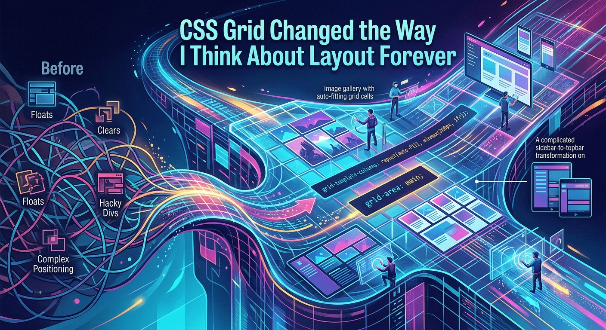

Why simplicity is the hardest skill in web design
Removing things is always harder than adding them. Here's how to build the discipline of restraint.
June 18, 2026EST. 2026
DESIGN · CODE · CLARITY

Before CSS Grid, I spent hours fighting floats and clearfixes, praying that my layouts would hold together across browsers. The web felt like a place where design ambitions went to die.
Everything changed the day I typed display: grid for the first time. The browser rendered exactly what I imagined. No hacks. No workarounds.
Grid gave me control over two axes simultaneously — rows and columns together, not one at a time. The mental model shift was profound. I stopped thinking in elements and started thinking in space.
The auto-fit and minmax() combination alone replaced hundreds of lines of media query code with a single elegant declaration.